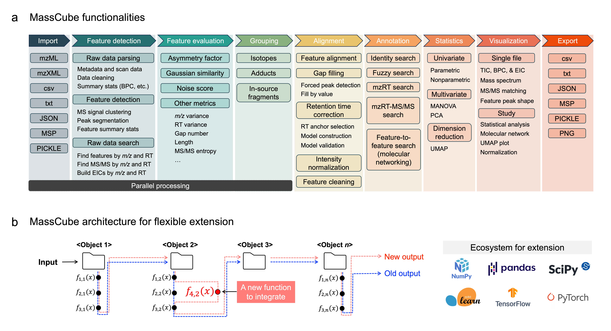
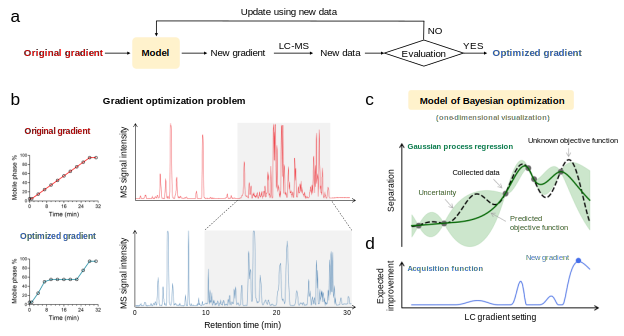
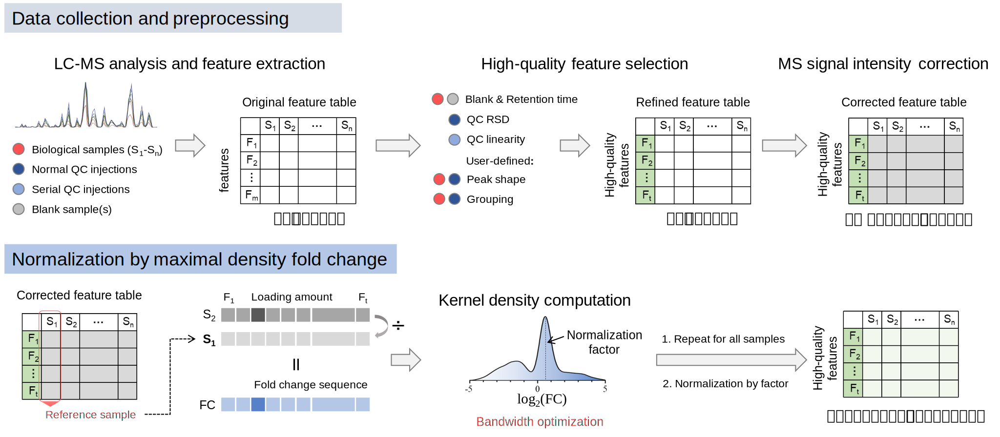
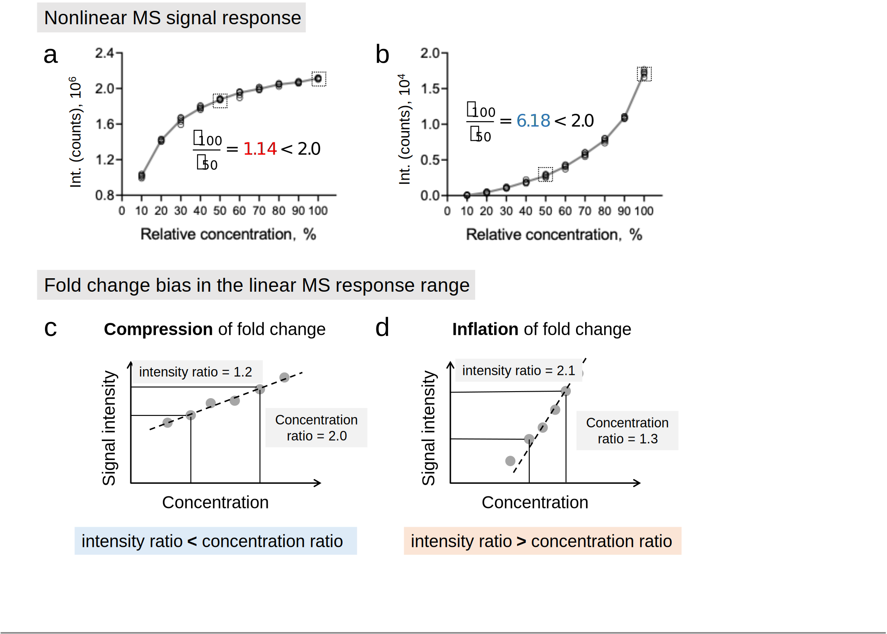

About Me
Hi there! I am a postdoctoral researcher in Fiehn Lab at the University of California, Davis.
Mass spectrometry (MS)-based metabolomics is essential for uncovering the fundamental biochemical mechanisms of biology, clinical medicine, and environmental science.
To achieve this goal, metabolomics data have to be reliable, reproducible and comparable.
My long-term goal is to integrate analytical chemistry, instrumentation, computer science, and bioinformatics to develop innovative tools that can (1) produce high-quality MS data and (2) transform raw data into meaningful biological insights.
I have published 24 peer-reviewed papers, including 8 first-author papers. I'm excited to share that two of my latest first-author works are currently under peer review at Nature Communications!
I am also the developer and maintainer of two Python packages and three R packages for metabolomics raw data processing (MassCube), experimental design (BAGO, with graphic user interface), statistical analysis (ABCstats), normalization (MAFFIN) and data visualization (tools4st).
Scientific Training
University of California, Davis, United States (2023.5 - present)
Postdoctoral researcher
Research supervisor: Prof. Oliver Fiehn
University of British Columbia, Canada (2019.5 - 2023.4)
Ph.D. in Chemistry
Research supervisor: Prof. Tao Huan
Zhejiang University, China (2014.9 - 2018.6)
B.Sc. in Chemistry (Qiushi Honors Program, Chu Kochen Honors College)
Research supervisor: Prof. Hao Li, Prof. Feihe Huang
University of Utah, United States (2017.3 - 2017.9)
Visiting scholar
Research supervisor: Prof. Peter J. Stang
Featured publications
1. MassCube

[In revision in Nature Communications] MassCube: a Python framework for end-to-end metabolomics data processing from raw files to phenotype classifiers.
Huaxu Yu, Jun Ding, Tong Shen, Min Liu, Yuanyue Li, Oliver Fiehn*
2. BAGO
[Preprint] Bayesian optimization of separation gradients to maximize the performance of untargeted LC-MS.
Huaxu Yu, Puja Biswas, Elizabeth Rideout, Yankai Cao, Tao Huan*
3. MAFFIN normalization
[Bioinformaitcs] MAFFIN: metabolomics sample normalization using maximal density fold change with high-quality metabolic features and corrected signal intensities.
Huaxu Yu, Tao Huan*
4. Correction of fold change bias in nontargeted metabolomics
[Analytical Chemistry] Fold-change compression: an unexplored but correctable quantitative bias caused by nonlinear electrospray ionization responses in untargeted metabolomics.
Huaxu Yu, Shipei Xing, Lorenz Nierves, Philipp F Lange, Tao Huan*
Latest News
-
MassCube has been selected for an oral presentation at the upcoming ASMS Annual Conference
Title: MassCube: a Python framework for end-to-end metabolomics data processing from raw files to phenotype classifiers
Conference: 73rd Conference on Mass Spectrometry and Allied Topics
Date: 2025-06-04
-
MassCube version 1.1.16 has been released
Meet our new version of MassCube for more accurate metabolite identification.
Source code: GitHub